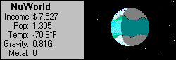
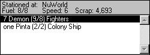
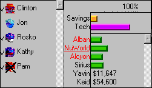

Spaceward Ho! Oynamak
Bütçe Bilgileri

Seçili gezegenle ilgili bilgiler.

Seçili filoyla ilgili bilgiler (bir filoyu listede tıklayarak seç).
Bütün gezegenlerin için genel bilgiler. Bütün paran ve metâlin bu sayılara gider ve bu sayılardan gelir. Sağda geçen sıradan bu yana olan değişiklik var.

Solda oyundaki oyuncuların listesi var. İşaretler sıralarını bitirip bitirmediklerini gösterir. Sağda, harcamanı gezegenler arasında paylaştırmak için bir çubuk grafik var.
Bütçe bilgilerindeki sayılar yalnızca bilgi vermek için oradadır. Onları doğrudan değiştiremezsin. Değiştirebileceğin şey, altlarındaki çubuk grafiklerdir.
Delta Tao kılavuzunun yeniden yapım tarafından yapılmış, resmî olmayan Türkçe çevirisi. İngilizce sayfa.